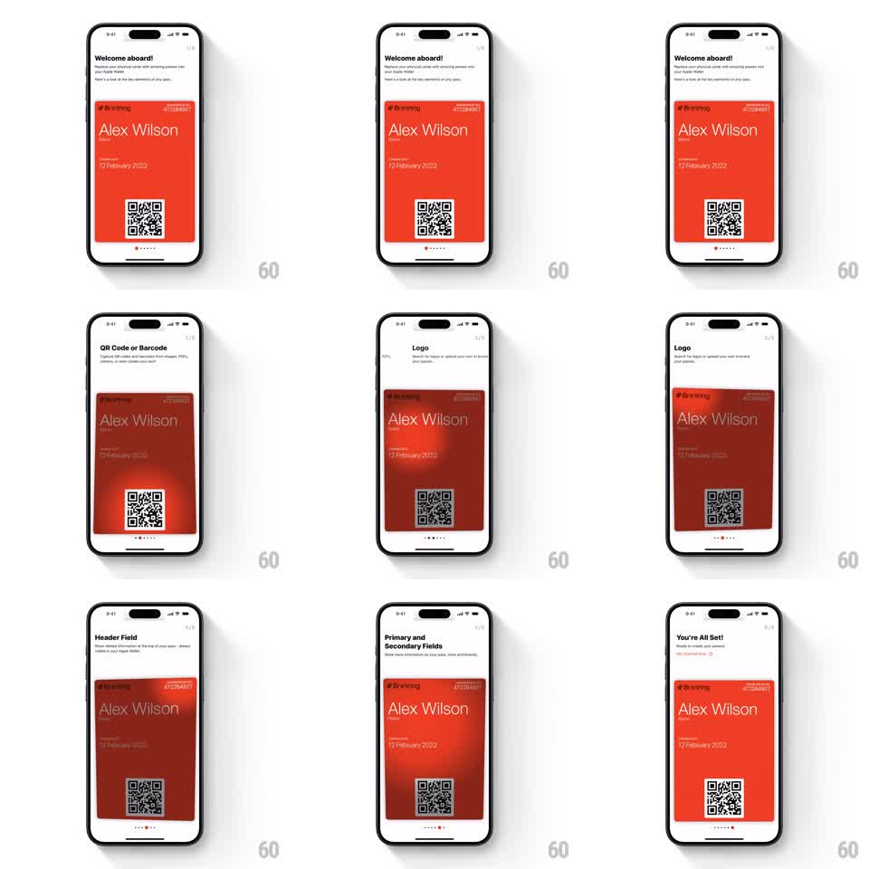

Media
Frame-by-frame

Rebuild this interaction 1:1: IntoWallet's torch-focus onboarding - each step dims the wallet pass behind a dark mask while a spotlight hole reveals the section being explained, stepping through QR code, logo, header field, and fields before lighting the whole card.

Rebuild this interaction 1:1: IntoWallet's torch-focus onboarding - each step dims the wallet pass behind a dark mask while a spotlight hole reveals the section being explained, stepping through QR code, logo, header field, and fields before lighting the whole card.
## Integration
Integration: stack-agnostic spec - springs given as stiffness/damping, timed motions as duration + curve; map every value to your framework and animation library of choice.
## Scene
White onboarding screen: a red-orange wallet pass ("Alex Wilson", membership card with QR code) centered, a headline and subcopy above, page dots below. Steps: "Welcome aboard!" (full card lit), "QR Code or Barcode" (spotlight on the QR), "Logo" (spotlight top-left), "Header Field", "Primary and Secondary Fields", "You're All Set!" (full card lit again).
## Motion spec
Pattern: traveling spotlight mask over a wallet pass.
- Step advance (tap or auto): the headline/subcopy crossfade (200ms), the page dot slides to the next position (spring ~300/20).
- The dark scrim (black at ~55%) covers the card; the spotlight - a rounded-rect hole at full brightness - moves from the old section to the new one (position + size over 450ms, ease-in-out), its corner radius morphing to hug the target (circle-ish for the QR, wide rect for fields).
- The lit section sits at full contrast; everything under the scrim dims uniformly.
- On the final step the scrim fades out entirely (400ms) and the card does a small celebratory lift (translateY -6pt and back, 300ms).
- Swiping back reverses the spotlight travel with the same timing.
## Calibration
- The spotlight edge is soft (~20pt feather) so the hole reads as light, not a cutout.
- Travel path is a straight line between section centers; resize happens mid-travel.
## Reduced motion
Scrim and hole crossfade between positions (300ms) without travel.
## Don't miss
- Only the card is masked - headline, dots, and buttons stay at full brightness.
- Spotlight size must hug each section tightly: generous padding kills the focus effect.